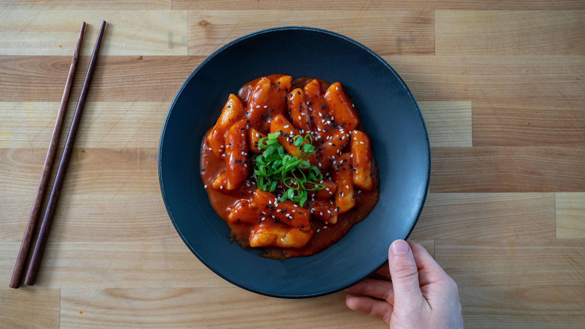

Tteokbokki or spicy Korean rice cakes have become one of my favorite weeknight meals recently. The chewy texture of the rice cakes with the slightly spicy sauce are bathed in creates a blueprint that is versatile for adding meats and vegetables. The traditional recipe at the top is adapted from Maangchi and the bottom recipe is a healthy-ish version that I make most weeks using packaged rice cakes mixed with lots of vegetables and lean meat.
This recipe is not mine, click this to go to theoriginal recipe